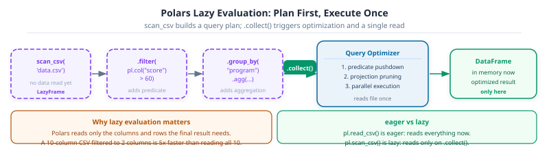

Your pandas pipeline handles 10,000 rows without complaint. Then the dataset grows to 10 million rows and a groupby that used to finish instantly now takes 40 seconds. Polars is the answer: a DataFrame library written in Rust that uses lazy evaluation to optimize queries before reading a single byte – and parallel execution to make full use of every CPU core.
Part 10 (10-combining-reshaping.ipynb) built the multi-table foundation you’ll translate here. The same two datasets are used so every operation can be compared directly. Polars concepts carry forward into the MLOps section and streaming pipelines in Part 7.
Callout markers used throughout this notebook are explained on the book cover page.
import numpy as npimport polars as pl# Polars reads CSV directly; no separate parse step needed for standard columnsdf = pl.read_csv("data/university_analytics.csv")print(f"shape : {df.shape}")df.head()
shape : (2400, 18)
shape: (5, 18)
student_id
cohort
program
gender
region
guardian
has_internet
course_id
course
semester
enrollment_date
study_hours
attendance_pct
midterm_score
final_score
project_score
final_grade
passed
str
i64
str
str
str
str
bool
str
str
str
str
f64
f64
f64
f64
f64
str
bool
"S0001"
2023
"Information Technology"
"F"
"South"
"Father"
true
"C01"
"Python Programming"
"Fall 2023"
"2023-09-04"
10.8
88.6
46.1
54.4
57.8
"D"
true
"S0001"
2023
"Information Technology"
"F"
"South"
"Father"
true
"C02"
"Statistics"
"Spring 2024"
"2024-01-15"
16.1
71.5
49.9
64.9
67.0
"C"
true
"S0001"
2023
"Information Technology"
"F"
"South"
"Father"
true
"C03"
"Data Structures"
"Fall 2023"
"2023-09-04"
23.6
71.5
57.3
64.1
83.0
"C"
true
"S0001"
2023
"Information Technology"
"F"
"South"
"Father"
true
"C04"
"Linear Algebra"
"Spring 2024"
"2024-01-15"
4.7
78.3
75.6
59.5
64.3
"C"
true
"S0001"
2023
"Information Technology"
"F"
"South"
"Father"
true
"C05"
"Machine Learning"
"Fall 2023"
"2023-09-04"
16.2
63.2
53.6
59.4
57.0
"C"
true
When pandas Is Not Enough
Your pandas pipeline works perfectly at 50,000 rows. The groupby runs in a second, the merge finishes before you blink, and everything fits in memory with room to spare. Then someone drops a 10-million-row export on your desk. The same pipeline now takes three minutes, swaps to disk halfway through, and your laptop fan starts spinning like it’s trying to take off.
This isn’t a pandas bug. It is a design trade-off. pandas processes one column at a time on a single CPU thread, using a Python object model that was designed for flexibility rather than throughput. For most interactive data science that trade-off is exactly right. But when data gets large enough to feel slow, you need a different tool.
Polars (pola.rs) was written from scratch in Rust by Ritchie Vink in 2020. It stores data in Apache Arrow format, executes operations across all CPU cores in parallel, and evaluates expressions lazily: building a query plan and optimising it before touching a single row. The same operations that take minutes in pandas can take seconds in Polars, without changing what the code looks like.
How it compares
pandas
Polars
Core language
Python / C
Rust
Execution
Single-threaded
Multi-threaded
Memory model
NumPy / Python objects
Apache Arrow
Evaluation
Eager (runs immediately)
Lazy by default (scan_* → .collect())
API style
Index-based, many methods
Expression-based, composable
Ecosystem maturity
Very mature (2008)
Fast-growing (2020)
When to use
Up to ~5M rows; default choice
Large files, performance-critical pipelines
You don’t have to choose one forever. Many production pipelines read and clean with Polars for speed, then convert to pandas for the parts of the ML ecosystem that expect it.
By the end of Part 11 (Polars) you will be able to:
#
Skill
Covered in
1
Build and inspect Polars DataFrames and compare them to pandas
Sec. 1
2
Use pl.col() expressions to select, filter, and derive columns
Sec. 2
3
Aggregate data with group_by and the expression API
Sec. 3
4
Understand eager vs lazy evaluation and use LazyFrame
Sec. 4
5
Parse and manipulate dates with Polars’s built-in datetime support
Sec. 5
6
Translate common pandas operations to Polars equivalents
Sec. 6
7
Compute per-group window stats with over() and process large files with scan_csv
Sec. 7
1. DataFrame Construction
Building a Polars DataFrame from a Python dict looks almost identical to pandas. The difference shows up in the schema: Polars always knows the dtype of every column, and it tells you explicitly:
Key Concept: Polars enforces strict dtypes; pandas 3 infers them
Every Polars column has a fixed dtype from creation: pl.Utf8 for strings, pl.Float64 for floats, pl.Int64 for integers. Polars raises an error if you try to mix types within a column. Pandas 3’s str dtype is conceptually similar but more permissive: it silently allows None values in a string column. Polars is stricter, which makes bugs surface earlier.
The first checks after loading data are the same in Polars as in pandas, but the method names differ slightly:
Pro Tip: Use df.schema to see column names and dtypes in one dict-like view
df.schema returns a Schema object, a mapping from column name to Polars dtype. It is the fastest way to confirm that read_csv inferred the right types before any analysis starts.
Activity 1 - First Look at the Polars DataFrame
Goal: Print the schema of df, then use df.describe() to get summary statistics. Compare the dtype labels to the pandas output from Part 8.
print(df.schema)
df.describe()
# TODO: print schema, then call df.describe()...
2. The Expression API: select, filter, with_columns
The biggest difference from pandas is that Polars doesn’t use bracket indexing for column selection or boolean filtering. Instead, every operation goes through pl.col() expressions, which describe what to compute without computing it immediately.
# Select specific columns -- equivalent to df[["col_a", "col_b"]] in pandasdf.select(["student_id", "midterm_score", "final_score"]).head(3)
shape: (3, 3)
student_id
midterm_score
final_score
str
f64
f64
"S0001"
46.1
54.4
"S0001"
49.9
64.9
"S0001"
57.3
64.1
Key Concept: pl.col() is an expression, not a value
pl.col(“midterm_score”) describes a column reference, not the column itself. Expressions compose: pl.col(“a”) + pl.col(“b”) describes an addition without performing it. Polars evaluates all expressions in a .select() or .with_columns() call together, which is what lets it parallelize across columns automatically.
filter is the Polars equivalent of boolean indexing:
# filter -- equivalent to df[df["midterm_score"] > 90] in pandashigh_scorers = df.filter(pl.col("midterm_score") >90)print(f"high scorers: {len(high_scorers)} of {len(df)} students")high_scorers.head()
high scorers: 31 of 2400 students
shape: (5, 18)
student_id
cohort
program
gender
region
guardian
has_internet
course_id
course
semester
enrollment_date
study_hours
attendance_pct
midterm_score
final_score
project_score
final_grade
passed
str
i64
str
str
str
str
bool
str
str
str
str
f64
f64
f64
f64
f64
str
bool
"S0012"
2024
"Engineering"
"M"
"North"
"Mother"
false
"C05"
"Machine Learning"
"Fall 2024"
"2024-09-02"
23.2
87.3
90.3
55.3
56.4
"C"
true
"S0022"
2022
"Data Science"
"F"
"North"
"Mother"
true
"C05"
"Machine Learning"
"Fall 2022"
"2022-09-05"
22.4
63.2
98.7
48.1
56.2
"C"
true
"S0026"
2024
"Computer Science"
"M"
"Central"
"Father"
true
"C01"
"Python Programming"
"Fall 2024"
"2024-09-02"
26.7
85.3
90.3
47.6
65.9
"C"
true
"S0027"
2024
"Data Science"
"F"
"East"
"Other"
true
"C04"
"Linear Algebra"
"Spring 2025"
"2025-01-13"
26.2
78.0
95.7
70.9
66.6
"B"
true
"S0043"
2024
"Information Technology"
"M"
"East"
"Mother"
true
"C04"
"Linear Algebra"
"Spring 2025"
"2025-01-13"
12.8
85.5
94.7
53.8
64.8
"C"
true
Combine conditions with & and |, same as pandas, but directly inside filter with pl.col() expressions:
# combine conditions: failed AND no internet accessfailed_no_internet = df.filter( (pl.col("final_grade") =="F") & (pl.col("has_internet") ==False) # noqa: E712)print(f"failed with no internet: {len(failed_no_internet)}")
failed with no internet: 60
with_columns adds or replaces columns. The result is always a new DataFrame; the original is never modified:
# Add average_marks -- equivalent to df["average_marks"] = ... in pandasdf = df.with_columns(average_marks=((pl.col("midterm_score") + pl.col("final_score") + pl.col("project_score")) /3))df.select(["student_id", "average_marks"]).head()
shape: (5, 2)
student_id
average_marks
str
f64
"S0001"
52.766667
"S0001"
60.6
"S0001"
68.133333
"S0001"
66.466667
"S0001"
56.666667
Common Mistake: Using bracket assignment instead of with_columns
df[“average_marks”] = … raises an error in Polars, unlike pandas. Polars DataFrames are immutable by design: the only way to add or modify a column is to call .with_columns() and reassign the result. This enforces the copy-on-write discipline explicitly, rather than relying on the runtime to enforce it as pandas 3 does.
Activity 2 - Filter and Derive
Goal: Add a passed column that is True when average_marks >= 0.5, using .with_columns() and pl.col(“average_marks”) >= 0.5. Then filter to passing students and print how many there are.
Pro Tip: Use polars.selectors to select columns by type, not by name
polars.selectors (aliased as cs) provides type-based column selectors, so you can write expressions like “all numeric columns” or “all string columns” without listing names:
import polars.selectors as cs
# Normalise every numeric column in one expression
df.with_columns(
(cs.numeric() - cs.numeric().mean()) / cs.numeric().std()
)
# Select only string columns
df.select(cs.string())
Common selectors: cs.numeric(), cs.string(), cs.boolean(), cs.temporal(), cs.by_dtype(pl.Float64). Combine them with | (union) or & (intersection): cs.numeric() | cs.boolean(). This is especially useful in feature engineering pipelines where the set of columns may change between runs.
3. GroupBy and Aggregation
Polars group_by uses the same split-apply-combine concept as pandas, but the aggregation is specified as a list of expressions inside .agg(), not as a method chained after .mean() or .sum():
Key Concept: .agg() takes a list of expressions, each producing one output column
In pandas, groupby(“program”)[“average_marks”].agg([“mean”, “std”, “count”]) returns a DataFrame with the stats as columns. In Polars the same result comes from passing named expressions to .agg(): pl.col(“average_marks”).mean().alias(“mean_marks”). The explicit .alias() is required when the default auto-generated name would be ambiguous.
Grouping by more than one column works the same way:
Pro Tip: Sort the result explicitly: group_by order is not guaranteed
Polars group_by doesn’t preserve or sort the output by the grouping key. Always chain .sort(“key_col”) after .agg() if the output order matters. The pandas equivalent sorted by default in older versions but no longer guarantees it either.
Activity 3 - Pass Rate by Program
Goal: Group df by program and compute, for each group, the fraction of students whose continue_drop is False. In Polars, (pl.col(“continue_drop”) == False).mean() gives the fraction directly.
# TODO: group by program, compute pass fraction per program, sort by program...
When a vectorised expression (pl.col("x") * 2) can’t express your logic, map_elements() applies a Python function element-wise. This is slower than expressions but necessary for custom string parsing, API calls, or complex conditionals that Polars can’t optimise.
Key Concept: Always pass return_dtype to map_elements()
map_elements() requires return_dtype to tell Polars the output type. Without it, Polars infers the type from the first element which can silently mismatch later rows. Always specify return_dtype=pl.String, pl.Int64, etc.
Common Mistake: Using the removed .apply() method
apply() was the pre-1.0 name for this function and is now removed. Any notebook or tutorial using .apply() on a Polars Series will fail on Polars 1.x. The fix is always a one-word rename to .map_elements() plus adding return_dtype.
4. LazyFrame and Lazy Evaluation
Every Polars operation above ran eagerly: it computed the result immediately and returned a new DataFrame. df.lazy() switches to lazy mode. In lazy mode, operations build a query plan instead of executing immediately. .collect() runs the optimized plan.

Polars lazy evaluation: scan_csv, filter, and group_by each add a step to the query plan without reading data. Calling .collect() triggers the query optimizer, which applies predicate pushdown and projection pruning before executing a single parallel read.
# Build a query plan -- nothing executes yetlazy_query = ( df.lazy() .filter(pl.col("has_internet") ==1) .group_by("program") .agg(pl.col("average_marks").mean().alias("mean_marks")) .sort("mean_marks", descending=True))# Inspect the query plan before runningprint(lazy_query.explain())
SORT BY [descending: [true]] [col("mean_marks")]
AGGREGATE[maintain_order: false]
[col("average_marks").mean().alias("mean_marks")] BY [col("program")]
FROM
simple π 2/2 ["program", "average_marks"]
FILTER [(col("has_internet").cast(Int32)) == (1)]
FROM
DF ["student_id", "cohort", "program", "gender", ...]; PROJECT["program", "average_marks", "has_internet"] 3/19 COLUMNS
# Execute the plan and get the resultlazy_query.collect()
shape: (4, 2)
program
mean_marks
str
f64
"Data Science"
64.831512
"Computer Science"
63.752968
"Engineering"
62.546487
"Information Technology"
61.896686
Key Concept: Lazy evaluation lets Polars optimize the query before running it
When you call .collect(), Polars analyses the whole query plan: it pushes filters as early as possible (predicate pushdown), drops columns that are not needed (projection pushdown), and parallelizes independent operations. The same query in eager mode runs each step sequentially with no cross-step optimization. For large datasets the difference is significant; for small ones it’s negligible. The API is identical apart from the .lazy() / .collect() bookends.
Common Mistake: Forgetting .collect() and treating a LazyFrame as a result
df.lazy().filter(…).group_by(…).agg(…) returns a LazyFrame, not a DataFrame. Printing it shows the query plan, not the data. Call .collect() to get a real DataFrame. If you need the shape, columns, or to iterate over rows, you must collect first.
Activity 4 - Lazy Top Schools
Goal: Rewrite the top-schools capstone from Part 8 using a lazy query: filter to students with internet == 1, group by school_id, take the mean average_marks, sort descending, and .collect() the top 5.
Polars 1.x ships a built-in SQL interface. pl.SQLContext registers one or more DataFrames under names and lets you query them with standard SQL. This is useful for teams comfortable with SQL, for migrating existing SQL queries to Polars, and for ad-hoc exploration without learning the full expression API:
Key Concept: SQL queries run on lazy DataFrames and benefit from the same query optimization
pl.SQLContext compiles SQL into Polars’ lazy query plan. The optimizer applies the same predicate pushdown and projection pushdown as a hand-written .lazy().filter().select() chain. You get SQL’s readability and Polars’ performance for free.
# Register DataFrames under SQL table namesctx = pl.SQLContext(students=df, eager=True)# Query 1: top-performing programs: pure SQLresult = ctx.execute(""" SELECT program, AVG(final_score) AS mean_score, COUNT(*) AS n_students FROM students GROUP BY program ORDER BY mean_score DESC""")print(result)# Query 2: filter + select: same as df.filter().select() but SQL syntaxhigh_scorers_sql = ctx.execute(""" SELECT student_id, final_score FROM students WHERE final_score > 0.9 ORDER BY final_score DESC LIMIT 5""")print(high_scorers_sql)
Key Concept: Polars parses dates at load time; pandas requires an explicit conversion step
In pandas, date columns read as str dtype until you call pd.to_datetime(). Polars with try_parse_dates=True infers and parses ISO-format dates automatically during read_csv, producing a pl.Date or pl.Datetime column. This means filtering and arithmetic work on dates immediately, without a conversion step.
Date-component extraction uses the .dt namespace, similar to pandas:
# Extract year, month, and weekday from the date columnattendance.select( ["date", pl.col("date").dt.year().alias("year"), pl.col("date").dt.month().alias("month"), pl.col("date").dt.weekday().alias("weekday"), # Mon=1 ... Sun=7 ]).head()
shape: (5, 4)
date
year
month
weekday
date
i32
i8
i8
2025-01-06
2025
1
1
2025-01-07
2025
1
2
2025-01-08
2025
1
3
2025-01-09
2025
1
4
2025-01-10
2025
1
5
Resampling to weekly or monthly means uses group_by_dynamic instead of pandas’ resample:
# Monthly mean attendance rate per school using group_by_dynamicschool_300 = attendance.filter(pl.col("school_id") ==300)school_300.sort("date").group_by_dynamic("date", every="1mo", group_by="school_id").agg( pl.col("attendance_rate").mean().alias("monthly_mean"))
shape: (3, 3)
school_id
date
monthly_mean
i64
date
f64
300
2025-01-01
0.90345
300
2025-02-01
0.90985
300
2025-03-01
0.8651
Pro Tip: group_by_dynamic replaces resample in Polars
series.resample(“M”).mean() in pandas becomes df.sort(“date”).group_by_dynamic(“date”, every=“1mo”).agg(…) in Polars. The sort before group_by_dynamic is required: Polars raises an error if the time column is not sorted.
Activity 5 - Monthly Attendance by School
Goal: Use group_by_dynamic to compute the mean attendance_rate per school per month across all schools in the attendance table. Sort by date before grouping.
# TODO: monthly mean attendance per school using group_by_dynamic...
6. Migration Patterns: pandas to Polars
The table below maps the most common pandas operations from Parts 8-10 to their Polars equivalents. The concepts are the same; the API surface is different:
Key Concept: Polars is strict; pandas is permissive
Polars raises errors early: wrong dtype in a column, missing .collect() on a LazyFrame, unsorted data before group_by_dynamic. Pandas absorbs most of these quietly, sometimes silently producing a wrong result. The Polars errors feel strict at first but save time in larger pipelines where a wrong-but-valid pandas result would surface much later.
7. Window Functions with over() and Streaming Large Files
Two Polars strengths that have no direct pandas equivalent: over() for grouped window calculations without reducing rows, and scan_csv/scan_parquet for processing files that don’t fit in memory.
7a. The over() Expression
In pandas, adding a per-group statistic back to the original rows requires groupby().transform(). In Polars, pl.col("x").mean().over("group") does the same thing inside a single with_columns() call. It computes the aggregation per group and broadcasts the result back to every row, aligned to the original index automatically.
# Add the per-program mean and std to every student row, in one expressiondf = df.with_columns( program_mean=pl.col("average_marks").mean().over("program"), program_std=pl.col("average_marks").std().over("program"),)# Z-score: how many standard deviations from the program mean?df = df.with_columns(marks_zscore=(pl.col("average_marks") - pl.col("program_mean")) / pl.col("program_std"))df.select(["student_id", "program", "average_marks", "program_mean", "marks_zscore"]).head(6)
shape: (6, 5)
student_id
program
average_marks
program_mean
marks_zscore
str
str
f64
f64
f64
"S0001"
"Information Technology"
52.766667
59.920338
-0.852207
"S0001"
"Information Technology"
60.6
59.920338
0.080967
"S0001"
"Information Technology"
68.133333
59.920338
0.978403
"S0001"
"Information Technology"
66.466667
59.920338
0.779855
"S0001"
"Information Technology"
56.666667
59.920338
-0.387605
"S0001"
"Information Technology"
69.466667
59.920338
1.137241
Key Concept: over() computes group stats without reducing rows
group_by().agg() produces one row per group: the result has as many rows as there are unique group values. .over(“group”) inside with_columns() keeps all original rows and attaches the group stat to each one. This is the right tool for feature engineering: every student in the “Engineering” program gets the engineering mean attached to their row, ready for modelling without a join.
# Rolling mean per school using over() -- group-aware rolling windowattendance = pl.read_csv("data/daily_attendance.csv", try_parse_dates=True)attendance_with_rolling = attendance.sort(["school_id", "date"]).with_columns( rolling_avg=pl.col("attendance_rate").rolling_mean(window_size=5, min_periods=3).over("school_id"))attendance_with_rolling.filter(pl.col("school_id") ==300).head(8)
shape: (8, 4)
date
school_id
attendance_rate
rolling_avg
date
i64
f64
f64
2025-01-06
300
0.874
null
2025-01-07
300
0.928
null
2025-01-08
300
0.933
0.911667
2025-01-09
300
0.847
0.8955
2025-01-10
300
0.866
0.8896
2025-01-13
300
0.909
0.8966
2025-01-14
300
0.896
0.8902
2025-01-15
300
0.905
0.8846
Activity 6 - Per-Program Z-Score
Goal: Using over(), add a column gender_mean_marks that is the mean average_marks within each gender group. Then add gender_zscore = (average_marks - gender_mean_marks) / gender_std_marks. Print the top 3 students by z-score in each gender.
7b. Streaming: Processing Files Larger Than Memory
pl.scan_csv() and pl.scan_parquet() read a file lazily: no data loads until .collect() is called. Combined with Polars’ streaming engine, filters and projections execute in chunks, so the working memory never exceeds what the query actually needs, even if the source file is larger than RAM.
The API is identical to eager reads; the difference is scan_ instead of read_.
# scan_csv: no data loads here, only a query plan is builtlazy_scan = ( pl.scan_csv("data/university_analytics.csv") .filter(pl.col("final_score") >80) .select(["student_id", "program", "final_score"]) .sort("final_score", descending=True))# .collect() executes with streaming (chunks through the file)result = lazy_scan.collect(streaming=True)print(f"Rows matching filter: {len(result)}")result.head()
Rows matching filter: 197
shape: (5, 3)
student_id
program
final_score
str
str
f64
"S0010"
"Data Science"
100.0
"S0017"
"Data Science"
100.0
"S0021"
"Information Technology"
100.0
"S0125"
"Computer Science"
100.0
"S0148"
"Data Science"
100.0
Pro Tip: Use Parquet instead of CSV for large files
CSV is plain text: Polars must read every byte to find the columns you asked for. Parquet is columnar: scan_parquet() reads only the columns referenced in your query, skipping all others. A file with 50 columns where you only need 3 loads roughly 3/50th of the data. For production pipelines with large files, converting a CSV to Parquet once and scanning Parquet from then on is a common and effective optimisation.
# Convert once
df.write_parquet("data/university_analytics.parquet")
# All future reads: columnar, faster, smaller
pl.scan_parquet("data/university_analytics.parquet") .select(["student_id", "final_score"]) .filter(pl.col("final_score") > 80) .collect(streaming=True)
Common Mistake: Not sorting before a rolling window in Polars
pl.col(“rate”).rolling_mean(5).over(“school_id”) operates on whatever order the rows are in. Without .sort([“school_id”, “date”]) first, the 5-row window picks up rows in an arbitrary order and produces meaningless values. Polars doesn’t sort automatically; it raises an error only for group_by_dynamic. For rolling_mean().over(), the wrong-order mistake is silent.
Capstone: Reproduce the pandas Capstone Exercises in Polars
Capstone Exercise - Top Schools, Risk Report, and Regional Summary
Goal: Reproduce three capstones from earlier parts using Polars:
Top schools (Part 8): Filter to students with internet == 1, group by school_id, compute mean average_marks, sort descending, show top 5.
Risk report (Part 9): Add a grade column based on average_marks using pl.when().then().otherwise(). Print grade distribution as proportions.
Regional summary (Part 10): Create a schools DataFrame mapping school_id to region, join it onto df, and compute mean marks per region.